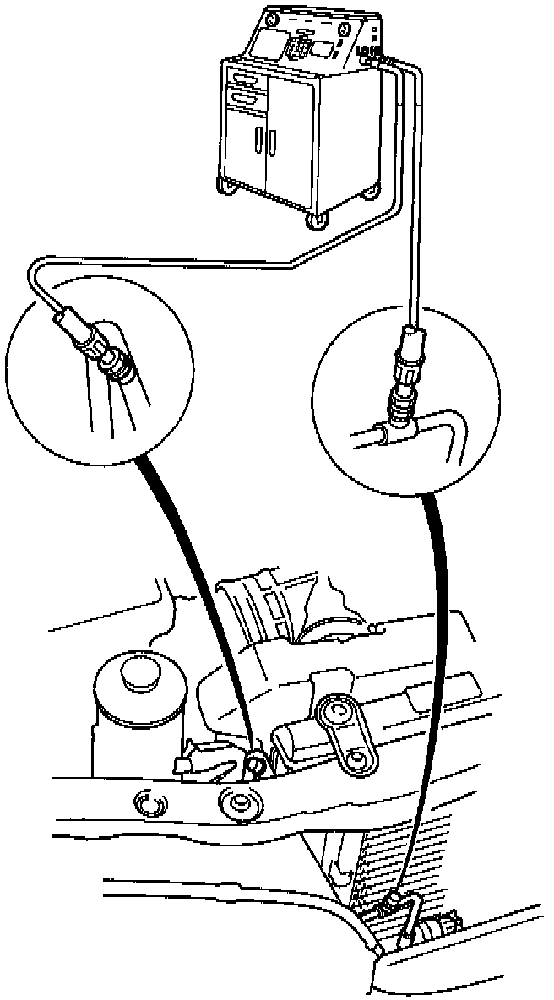

Charging the System

WARNING: Always wear eye protection when charging the system.
CAUTION: Do not overcharge the system; the compressor will be damaged.
Attach an Air Conditioning Service Station as shown. Follow the equipment manufacturer's instructions.
Refrigerant capacity: 900 - 950 g (32 - 34 oz)